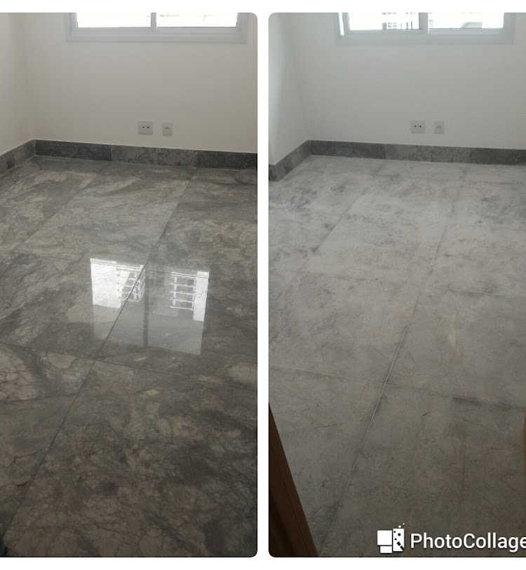
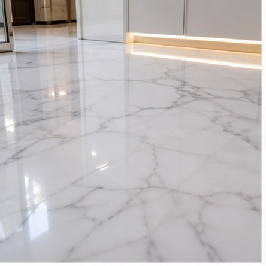
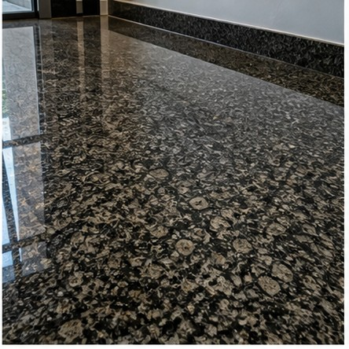
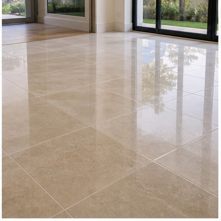
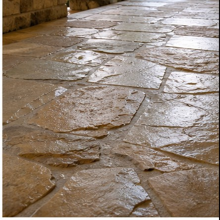
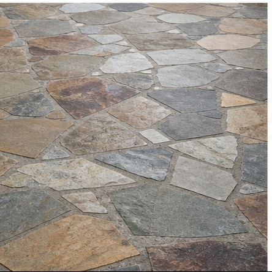
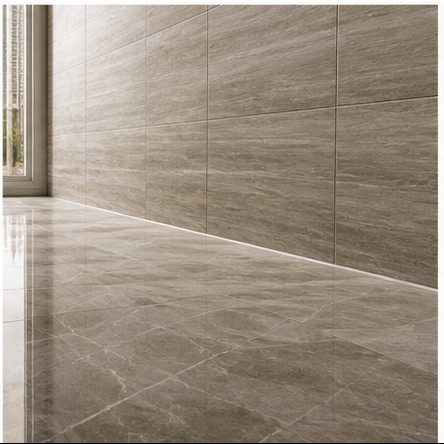
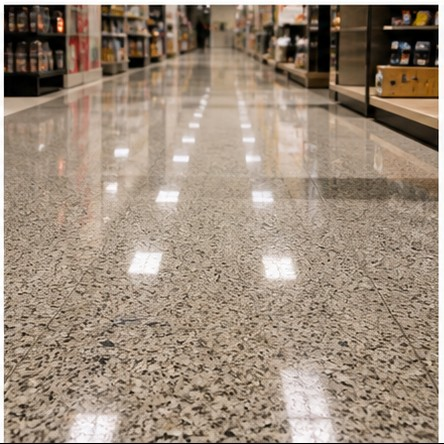
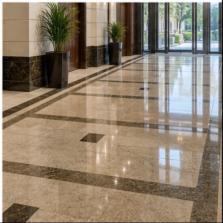
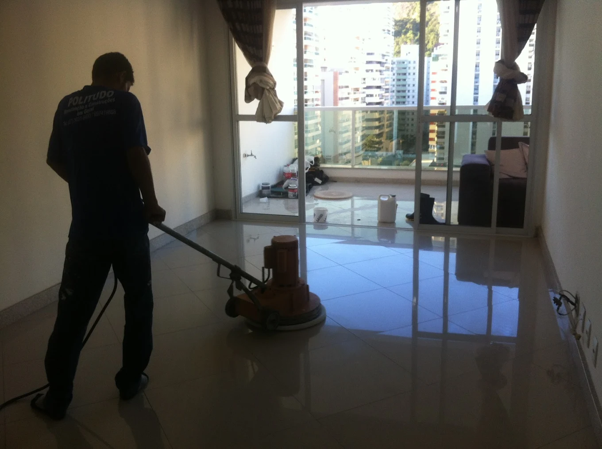

Brilho espelhado
Remova riscos e manchas, devolvendo a sofisticação ao ambiente com polimento de mármore, granito, porcelanato e pedras naturais.
Recupere o brilho de "piso novo" sem precisar trocar o revestimento. Especialistas em polimento e restauração de mármore, granito e porcelanato, com atendimento rápido em Vila Velha e toda a Grande Vitória.
Seu piso manchado, riscado ou sem brilho não precisa ser substituído sem uma avaliação técnica. A Politudo identifica o material e aplica o processo certo para recuperar beleza, proteção e valor.
Remova riscos e manchas, devolvendo a sofisticação ao ambiente com polimento de mármore, granito, porcelanato e pedras naturais.
Proteja seu investimento contra café, vinho, umidade e desgaste, facilitando a limpeza diária em áreas internas e de alto tráfego.
Remova encardidos e resíduos que produtos comuns de supermercado não conseguem tirar, sem agredir o revestimento.
Recupere cor, uniformidade e sensação de piso novo com maquinário e produtos adequados para cada superfície.


Mármore, granito, porcelanato e Pedra São Tomé exigem abrasivos, produtos e pressão corretos. A Politudo atua na prevenção, restauração e tratamento de pisos, revestimentos e conservação de ambientes com critério antes de qualquer intervenção.
O foco é restaurar sem improviso: cada material pede abrasivo, produto, pressão e finalização corretos para evitar manchas, riscos e perda de acabamento. Também atendemos quem busca como limpar Pedra São Tomé encardida ou restaurar porcelanato em Vitória ES.

Mármore
Granito
Porcelanato
Pedra São Tomé
Pedras naturais
Revestimentos
Pisos comerciais
Áreas condominiaisFotos de trabalhos executados pela equipe, com foco em brilho, limpeza, uniformidade e recuperação do aspecto original do piso.

.jpeg)
.jpeg)

Clientes procuram a Politudo quando precisam recuperar um piso caro sem correr o risco de um acabamento amador. A empresa aparece com nota 5,0 no Google e também tem avaliações positivas na web, incluindo Facebook.
Com base em Itapuã, a Politudo é referência em empresa de polimento de mármore em Vila Velha, restauração de porcelanato em Vitória ES e limpeza técnica de pisos na Grande Vitória.
Respostas objetivas para quem procura polimento de piso, impermeabilização ou limpeza especializada na Grande Vitória.
Quando o piso perdeu brilho, está riscado, manchado ou com aspecto opaco. A avaliação indica se o melhor caminho é polimento, limpeza técnica, restauração ou proteção.
Sim. A equipe atende residências, apartamentos, condomínios, lojas, clínicas e ambientes corporativos em Vila Velha e na Grande Vitória.
Mármore, granito, porcelanato, Pedra São Tomé, pedras naturais e diversos revestimentos podem receber tratamento conforme o estado e o uso do ambiente.
Entre em contato pelo telefone ou WhatsApp, informe o tipo de piso, metragem aproximada, cidade e envie fotos do local para uma avaliação inicial.
Pisos como mármore, granito, porcelanato e Pedra São Tomé precisam de maquinário diamantado, produtos específicos e leitura técnica do material. Um processo errado pode abrir manchas, riscar a superfície ou tirar o acabamento, fazendo o barato sair caro.
Envie fotos do ambiente e receba orientação sobre o melhor tratamento para recuperar brilho, proteger contra manchas e conservar seu piso sem trocar o revestimento.